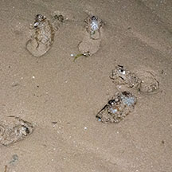
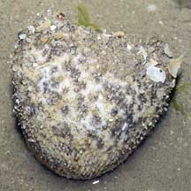
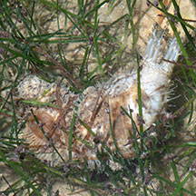
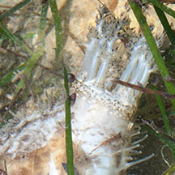
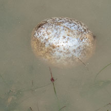

|
|
| sea cucumbers text index | photo index |
| Phylum Echinodermata > Class Holothuroidea |
| Ball
sea cucumber Phyllophorus sp. Family Phyllophoridae updated Apr 2020 Where seen? This spherical sea cucumber is commonly seen on our Northern shores. It is usually buried in sandy areas near seagrasses, often many near one another. Sometimes, it may also be found washed up on the shore hidden among the seaweeds. Be careful not to step on these. Features: 10-15cm. Body spherical. Those freshly dug-up are more U-shaped ovals with the mouth and backside facing the surface. Colour white, beige, brownish and sometimes orangey. Many tube feet and tiny filaments (papulae) evenly cover the entire body. These help grip the sand and keep the animal anchored underground. Feeding tentacles translucent white with branched tips which are darker. Usually, only the feeding tentacles stick out above the sand while the entire animal remains buried. |
 Many often buried just beneath the surface. Changi, Aug 15 |
 Freshly dug up sea cucumber with anus and mouth facing upwards. Changi, Apr 05 |
 Feeding tentacles from a buried sea cucumber.. Changi, Jul 07 |
| Those found above ground tend to be round, sometimes inflated into
translucent white balls, sometimes floating in the water. Like
some other sea cucumbers, it will eject its guts if it feels threatened. What does it eat? It gathers edible bits from the water with mucus-covered feeding tentacles. Status and threats: The Tennis-ball sea cucumber (Phyllophorus spiculata) is listed as 'Vulnerable' on the Red List of threatened animals of Singapore. In Singapore, the main threat is habitat loss due to reclamation or human activities along the coast that pollute the water. |
 Rarely found above ground. Changi, Jul 15 |
 Feeding tentacles and long thin tube feet.. |
 Those found above ground may be inflated into translucent balls and float in the water. Changi, Nov 16 |
| Ball sea cucumbers on Singapore shores |
On wildsingapore
flickr
|
| Other sightings on Singapore shores |
|
Links
References
|